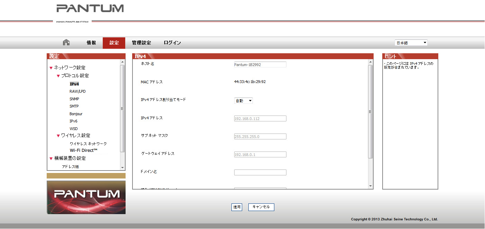

4. 有線ネットワークの設定 (有線ネットワーク モデル向け)
場合によっては、プリンターのネットワーク パラメーターをいくつか設定する必要があります。これらのパラメーターは、組み込み Web サーバーから設定できます。
4.1. IP アドレスの設定
プリンターの IP アドレスは DHCP 機能により自動的に取得することもできますし、手動で設定することもできます。
| 自動設定
本プリンターでは、DHCP 自動設定機能がデフォルトで有効になっています。
1. ネットワーク ケーブルを使ってプリンターをネットワークに接続し、開始準備作業を完了します。
2. プリンターはサーバーによって割り当てられた IP アドレスを自動的に取得します。自動取得した IP アドレスは、数分後に使用することができます。
|
|
注：
|
• DHCP によって自動的に IP アドレスを取得できない場合は、デフォルトの IP アドレス 169.254.xx.xx が自動的に使用されます。
• プリンターが長期間使用されていない場合やネットワーク アクセス ポイントが変更された場合には、DHCP の特性により、ネットワークから自動的に割り当てられた IP アドレスが変化し、プリンターに接続できなくなることがあります。DHCP 機能を有効にする場合は、ネットワークから自動的に割り当てられた IP アドレスをプリンターの Mac アドレスと関連付けることをお勧めします。
|
| 手動設定
IP アドレスを Web ブラウザーのアドレスバーに入力し、組み込み Web サーバーを開きます。
1. ナビゲーション バーの [設定] をクリックして、[設定] ページを開きます。
2. [ネットワーク設定] - [IPv4 設定] を選択します。
3. IP アドレス割り当てモード (手動)、IP アドレス、サブネット マスクを設定します。その他の項目は任意です。
4. [適用] をクリックして設定を保存します。
4.2. ネットワークへのプリンターのインストール
この設定では、プリンターをネットワークに直接接続して、ネットワーク上のすべてのコンピューターから直接プリンターで印刷できるようにします。
1. プリンターを起動する前に、プリンターのＬＡＮポートにＬＡＮケーブルを接続します。
2. プリンターを起動し、コントロール パネルのステータス インジケーターが準備完了状態になるまで待ちます (下図を参照)。
3. コンピューターにプリンターの CD-ROM を挿入します。ソフトウェアのインストーラーが起動しない場合は、CD-ROM で setup.exe ファイルを検索し、そのファイルをダブルクリックして実行してください。
4. インストーラーの操作指示に従ってください。
5. 操作を続けて、インストールを完了します。
4.3. ネットワーク製品の設定
4.3.1. ネットワーク設定の表示と変更
組み込み Web サーバーを使用して、IP 設定を表示したり変更することができます。
1. コントロール パネルの [キャンセル/続行] ボタンを長押しして DEMO 情報ページを印刷し、プリンターの IP アドレスを確認します。DEMO ページを印刷するには、アイドル状態のときにコントロール パネルのボタンを長押しします (下図を参照)。
2. Web ブラウザーのアドレスバーに IP アドレスを入力し、組み込み Web サーバーにアクセスします。
3. [設定] タブをクリックして、ネットワーク情報を表示します。必要に応じて、設定を変更します。

4.3.2. Web サーバーのログイン パスワードの設定と変更
組み込み Web サーバーを使用して、ネットワークのパスワードを設定、または、既存のパスワードを変更します。
|
|
注：
|
• デフォルトのユーザー名は「admin」、初期設定パスワードは「000000」です。
|
1. 組み込み Web サーバーを開くには、最初にログインしてください。
2. [管理設定] タブをクリックします。
3. パスワード ボックスとパスワードの確認ボックスに、新しいパスワードを入力します。
4. ウィンドウ下部の [適用] ボタンをクリックして設定を保存します。
4.3.3. 出荷時の設定に戻す
プリンターのパラメーター設定をすべてリセットする必要がある場合は、出荷時の設定に戻すことができます。出荷時の設定にリセットするには、プリンターの電源がオフの時に [キャンセル/続行] ボタンを長押しして電源をオンにし、プリンターが準備完了状態になるまで 10 秒間押し続けます。